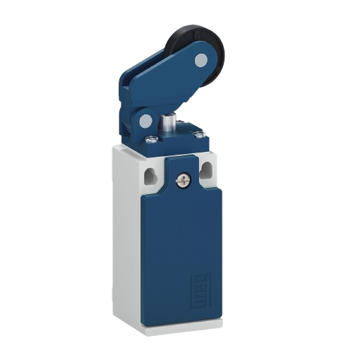
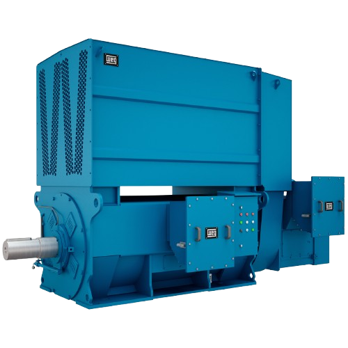

O sensor fim de curso é um dispositivo responsável por detectar a posição final de um movimento mecânico. Quando acionado, ele envia um sinal elétrico para interromper ou alterar o funcionamento do sistema.
Esse sensor é fundamental para garantir segurança e precisão em máquinas automatizadas.

Os sensores fim de curso podem ser mecânicos, magnéticos, indutivos ou ópticos.
Vídeo explicando os diferentes tipos de sensores fim de curso.
O motor elétrico de indução trifásico é uma máquina elétrica que transforma energia elétrica em energia mecânica através da indução eletromagnética. É o tipo de motor mais utilizado na indústria devido à sua robustez, eficiência e baixo custo de manutenção.
Seu funcionamento depende da alimentação por corrente alternada trifásica, que cria um campo magnético girante responsável pelo movimento do rotor.

Mais de 80% dos motores utilizados na indústria são motores de indução trifásicos.
Vídeo demonstrando o princípio de funcionamento do motor trifásico.